3.8. How to tighten the model?
Generally speaking, if we are able to reduce the size of the search tree (to tighten the model), we can speed up the search. We are talking about visiting (preferably implicitly) the whole search tree to be able to prove optimality (other techniques exist to find good nodes in the search tree). We present two[2] such techniques here. Breaking symmetries allows to disregard entire subtrees in the search tree that wouldn’t bring any new information to the search while bounding reduces the variable domains and thus reduces the number of branching and augments the efficiency of the propagation techniques[3].
3.8.1. Breaking symmetries with constraints
In the section A second model and its implementation, when we declared the variables X representing the marks of a Golomb ruler, we implicitly took for granted that X[1] < X[2] < ... < X[n].
That is exactly what we did when we imposed the differences to be positive:
IntVar* diff1;
IntVar* diff2;
int k, l, next_k, next_l;
for (int i = 1; i < n - 1; ++i) {
for (int j = i + 1; j <= n; ++j) {
k = i;
l = j;
diff1 = s.MakeDifference(X[j], X[i])->Var();
diff1->SetMin(1);
while (next_interval(n, k, l, &next_k, &next_l)) {
diff2 = s.MakeDifference(X[next_l], X[next_k])->Var();
diff2->SetMin(1);
s.AddConstraint(s.MakeNonEquality(diff1, diff2));
k = next_k;
l = next_l;
}
}
}
In trying to avoid duplicating certain quaternary constraints, we actually declared implicitly to the solver that X[1] < X[2] < ... < X[n]. Hadn’t we done so, there was no way the solver could have guessed that the marks are in an increasing sequence[1]. For the solver, the solution
(1)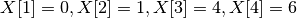
and the solution
(2)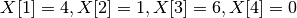
would have been two different solutions and we would explicitly have had to tell the solver not to generate the second one:
for (int i = 1; i < n; ++i) {
s.AddConstraint(s.MakeLess(X[i],X[i+1]));
}
Thanks to diff1->SetMin(1) and diff2->SetMin(1) and the two for loops, the ordered variables 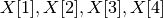 have only increasing values, i.e. if 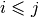 then 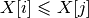. Solutions (1) and (2) are said to be symmetric and avoiding the second one while accepting the first one is called breaking symmetry.
There is a well-known symmetry in the Golomb Ruler Problem that we didn’t break. Whenever you have a Golomb ruler, there exist another Golomb ruler with the same length that is called the mirror ruler.
Figure Two mirror Golomb rulers of order 4. illustrates two mirror Golomb rulers of order 4.
Two mirror Golomb rulers of order 4.
Golomb ruler 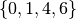 has  as mirror Golomb ruler. Both have exactly the same length and can be considered symmetric solutions. To break this symmetry and allow the search for the first one but not the second one, just add X[2]-X[1] < X[n] - X[n-1]:
as mirror Golomb ruler. Both have exactly the same length and can be considered symmetric solutions. To break this symmetry and allow the search for the first one but not the second one, just add X[2]-X[1] < X[n] - X[n-1]:
s.AddConstraint(s.MakeLess(s.MakeDifference(X[2],X[1])->Var(),
s.MakeDifference(X[n],X[n-1])->Var()));
Later on, in the section Breaking symmetries with SymmetryBreakers, we will see how to provide some rules to the solver (by implementing SymmetryBreakers) so that it generates itself the constraints to break symmetries. These constraints are generated on the fly during the search!
3.8.2. Better bounds helps
In all implementations, we used  as an upper bound on
as an upper bound on  . In the case of the Golomb Ruler Problem, finding good upper bounds is a false problem. Very efficient techniques exist to find optimal or near optimal upper bounds. If we use those bounds, we reduce dramatically the domains of the variables. We can actually use as an upper bound for 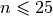 as these bounds can be obtained by projective and affine projections in the plane[4].
. In the case of the Golomb Ruler Problem, finding good upper bounds is a false problem. Very efficient techniques exist to find optimal or near optimal upper bounds. If we use those bounds, we reduce dramatically the domains of the variables. We can actually use as an upper bound for 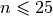 as these bounds can be obtained by projective and affine projections in the plane[4].
The search can also benefit from lower bounds. Every difference must in itself be a Golomb ruler. Thus Y[i][j] can be bounded by below by the corresponding optimal Golomb ruler.
In this section, we use a 2-dimensional array to collect the differences: Y[i][j] = X[j] - X[i]:
std::vector<std::vector<IntVar *> > Y(n + 1,
std::vector<IntVar *>(n + 1));
for (int i = 1; i < n; ++i) {
for (int j = i + 1; j <= n; ++j) {
Y[i][j] = s.MakeDifference(X[j], X[i])->Var();
if ((i > 1) || (j < n)) {
Y[i][j]->SetMin(kG[j-i +1]); // Lower bound G(j - 1 + 1)
} else {
Y[i][j]->SetMin(kG[j-i] + 1); // Lower bound on Y[1][n] (i=1,j=n)
}
}
}
where kG[n] is .
The AllDifferent constraint doesn’t take a 2-dimensional array as parameter but it is easy to create one by flattening the array:
Constraint * AllDifferent(Solver* s,
const std::vector<std::vector<IntVar *> > & vars) {
std::vector<IntVar*> vars_flat;
for (int i = 0; i < vars.size(); ++i) {
for (int j = 0; j < vars[i].size(); ++j) {
if (vars[i][j] != NULL) {
vars_flat.push_back(vars[i][j]);
}
}
}
return s->MakeAllDifferent(vars_flat);
}
These are static bounds, i.e. they don’t change during the search. Dynamic bounds are even better as they improve during the search and tighten the domains even more.
For instance, note that
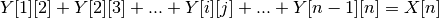
so
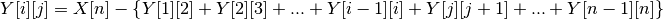
The differences on the right hand side of this expression are a set of different integers and there are 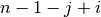 of them. If we minimize the sum of these consecutive differences, we actually maximize the right hand side, i.e. we bound 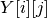 from above:
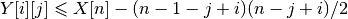
We can add:
for (int i = 1; i < n; ++i) {
for (int j = i + 1; j <= n; ++j) {
s.AddConstraint(s.MakeLessOrEqual(s.MakeDifference(
Y[i][j],X[n])->Var(), -(n - 1 - j + i)*(n - j + i)/2));
}
}
Let’s compare our tightened third implementation with the rest, again to compute  :
:
| Statistics | Impl1 | Impl2 | Impl2+ | Impl3 | tightened Impl3 |
|---|---|---|---|---|---|
| Time (s) | 4,712 | 48,317 | 1,984 | 0,338 | 0,137 |
| Failures | 51 833 | 75 587 | 53 516 | 7 521 | 2288 |
| Branches | 103 654 | 151 169 | 107 025 | 15 032 | 4572 |
| Backtracks | 51 836 | 75 590 | 53 519 | 7 524 | 2291 |
The interested reader can find other dynamic bounds in [GalinierEtAl].
Footnotes
| [1] | Declaring variables in an std::vector doesn’t tell anything about their respective values! |
| [2] | There exist other techniques. Later, we will see how over-constraining can improve the search. |
| [3] | This short explanation is certainly too simple to describe all the subtleties of search strategies. After all, modelling is an art! |
| [4] | These transformations were discovered in the beginning of the 20th century without any computer! See http://www.research.ibm.com/people/s/shearer/grtab.html. |
Bibliography
| [GalinierEtAl] | Philippe Galinier, Brigitte Jaumard, Rodrigo Morales and Gilles Pesant. A Constraint-Based Approach to the Golomb Ruler Problem, 3rd International Workshop on the Integration of AI and OR Techniques in Constraint Programming for Combinatorial Optimization Problems (CPAIOR01), 2001. |
Google or-tools |
User's Manual
Google search
Welcome
Tutorial examples
Current chapter
3. Using objectives in constraint programming: the Golomb ruler problem
Previous section
3.7. A third model and its implementation
Next section
3.9. How does the solver optimize?